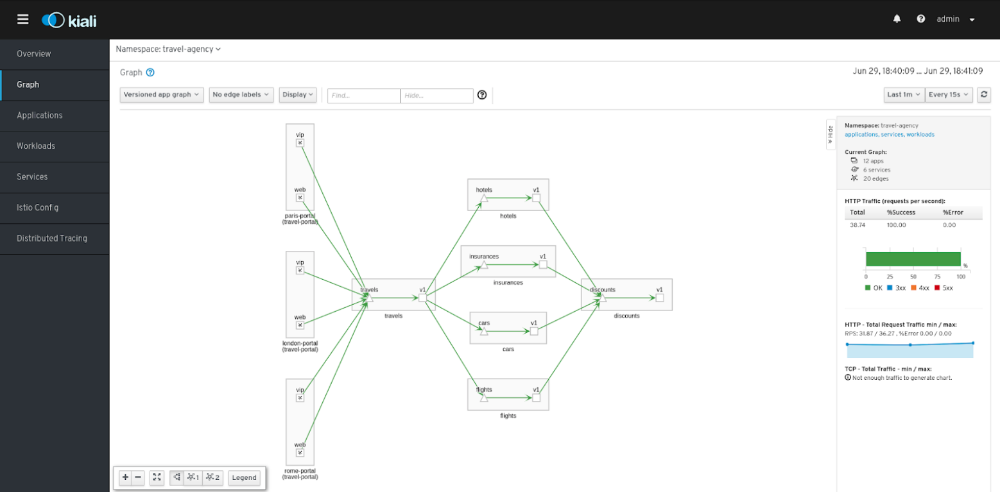
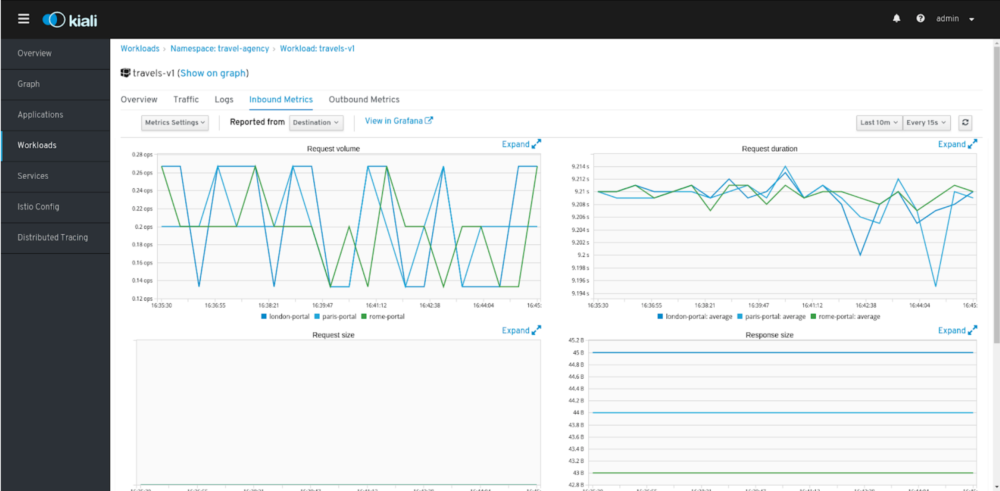
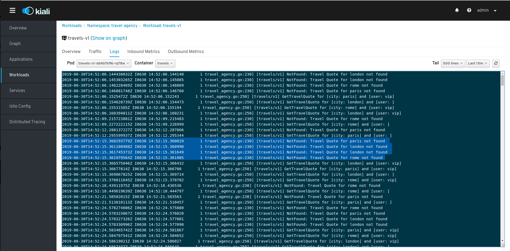
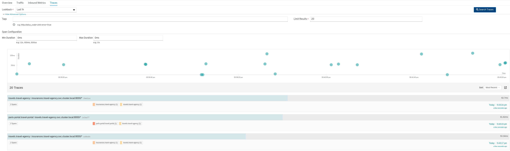
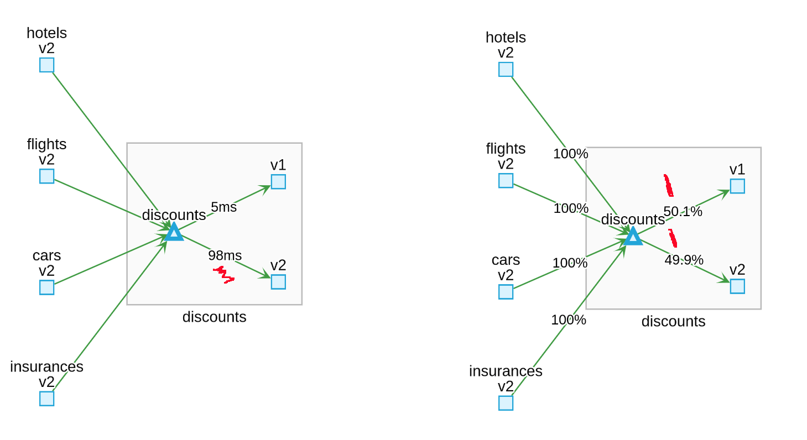
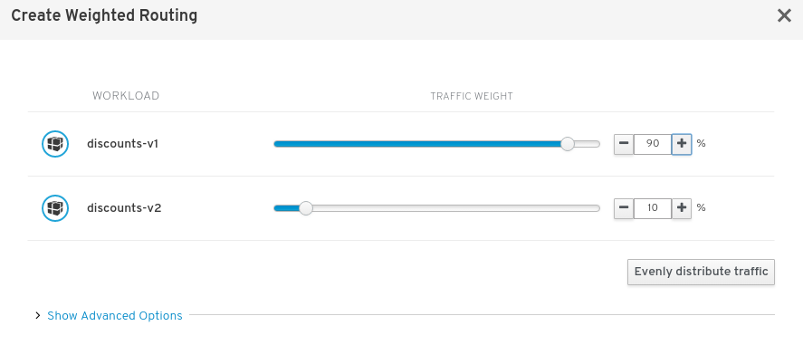

[2] Kiali: Observability in Action
[2.1] Goals
- Multiple namespaces scenarios
- Correlate metrics, traces and logs
- A/B testing
- Apply Istio configuration through Kiali actions
[2.2] Deploy travel-agency
Version 1
kubectl create namespace travel-agency
kubectl label namespace travel-agency istio-injection=enabled
kubectl apply -f <(curl -L https://git.io/fjoH0) -n travel-agency
# Verify travel-agency pods are up and running
kubectl get pods -n travel-agency -w
# Troubleshooting - Delete workloads and services
kubectl delete -f <(curl -L https://git.io/fjoH0) -n travel-agency
[2.3] Deploy travel-portal
kubectl create namespace travel-portal
kubectl label namespace travel-portal istio-injection=enabled
kubectl apply -f <(curl -L https://git.io/fjoQ1) -n travel-portal
# Verify pods
kubectl get pods -n travel-portal -w
# Troubleshooting - Delete workloads and services
kubectl delete -f <(curl -L https://git.io/fjoQ1) -n travel-portal
[2.4.0] Explore Kiali
Walkthrough
- Namespaces dashboard
- Graph: visualization options
- Search and filter Applications, Workload, Services
- Metrics, Logs, Traces
- Istio configuration
[2.4.1] Dashboard

Filters, Sorting, Compact/Expand
[2.4.2] Graph options

Graph types, Edge info, Find/Hide
[2.4.3] Applications, Workloads and Services

Filters, Sorting
[2.4.4] App,Wkld,Svc Details

Overview, Traffic, Logs/Traces, Metrics
[2.4.5] Metrics Details

Multiple selection criteria, Destination/Source telemetry
[2.4.6] Service Details

Traces integration per Service
[2.4.7] Workload Log Details

Traces integration per Service
[2.5.0] Deploy travel-agency
Version 2
kubectl apply -f <(curl -L https://git.io/fjo7s) -n travel-agency
# Verify pods
kubectl get pods -n travel-agency -w
# Troubleshooting - Delete workloads and services
kubectl delete -f <(curl -L https://git.io/fjo7s) -n travel-agency
Let's start an A/B Testing scenario
[2.5.1] Analyze Response Time

Spot potential bottlenecks
[2.5.2] Analyze detailed metrics

Slower response since version 2 was deployed. Worse in vip portals.
Investigate more services.
[2.5.3] Analyze travel service traces

Confirm slow traces.
[2.5.4] Analyze workload logs

It seems version 2 introduced ChaosMonkey delays in several workloads.
[2.6.0] Matching routing

Apply on travels, hotels, insurances, cars and flight services
[2.6.1] Analyze traffic

Web portal traffic is back to normal response time
[2.7.0] Weighted Routing

Evenly Splitted traffic between fast and slow versions
[2.7.1] Apply Weighted Routing

Reduce traffic routed to version 1
[2.7.2] Analyze traffic

Slower version only gets a 10% of the traffic